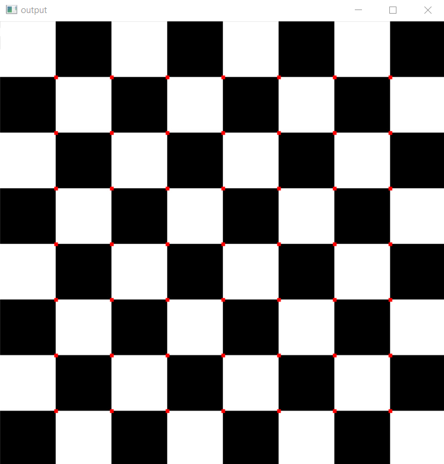

Draw Corners
OpenCV has the function cv.cornerHarris() for this purpose. Its arguments are:
- img- Input image. It should be grayscale and float32 type.
- blockSize- It is the size of neighbourhood considered for corner detection.
- ksize- Aperture parameter of the Sobel derivative used.
- k- Harris detector free parameter in the equation.
Steps
- Determine which windows produce very large variations in intensity when moved in both X and Y directions.
- With each such window found, a score is computed
- After applying a threshold to this score, important corners are selected & marked.
Code
1
2
3
4
5
6
7
8
9
10
11
12
13
14
15
16
17
18
19 | import numpy as np
import cv2 as cv
img = cv.imread('chess.jpg')
cv.imshow('img', img)
gray = cv.cvtColor(img, cv.COLOR_BGR2GRAY)
gray = np.float32(gray)
dst = cv.cornerHarris(gray, 2, 3, 0.04)
dst = cv.dilate(dst, None)
img[dst > 0.01 * dst.max()] = [0, 0, 255]
cv.imshow('output', img)
if cv.waitKey(0) & 0xff == 27:
cv.destroyAllWindows()
|
Output

Completed Successfully
Videos